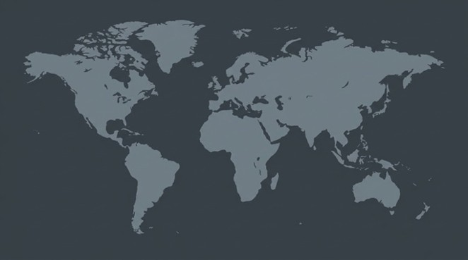

NUESTRA MISIÓN
Impulsamos proyectos de impacto positivo mediante gestión responsable y tecnología aplicada.
- Protección ambiental
- Gestión eficiente
- Desarrollo sostenible
- Compromiso social
Soluciones sostenibles e innovación ambiental para proteger los recursos naturales y construir un futuro seguro.
COMIENZA AQUÍImpulsamos proyectos de impacto positivo mediante gestión responsable y tecnología aplicada.
Más de una década desarrollando estrategias de conservación y seguridad hídrica a nivel regional.
Garantizamos el acceso, monitoreo y preservación de fuentes hídricas estratégicas.
